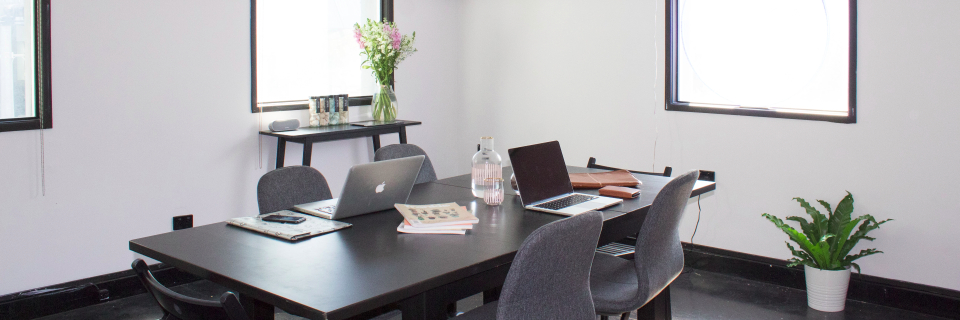

Intro
I am the founder and CTO of Quatre Deux, a
successful Brazilian software consultancy company serving advanced clients worldwide.
In my free time, I like to go to the underground parties, practice longboard downhill, stream League of
Legends and Wild Rift on Twitch, and travel
the world.
Specialties: I solve problems. Software, people, companies.
Work

I like to develop products that transform lives, whether that be websites, e-commerces, apps, or
anything in between.
My goal as a software engineer is to help my clients meet their business goals and to satisfy their
customers' demands.
My mastered tools are Tailwind CSS,
Alpine.js,
Laravel,
Livewire.
About
Around the age of 6, I started to become interested in chess when I saw my schoolmates playing. I asked
them to teach me, but nobody wanted to, so in a week, just watching them play, I learned the basic
moves. For almost 3 years I didn't win a game, but I kept playing until I got my first victory against
my neighbor. Since then I became almost unstoppable, I even became a four-time champion in four
consecutive years of the regional chess championship.
My chess story illustrates very well who I am. At the beginning I tend to have a lot of difficulty, but
I adapt and don't give up. Consequently, as time goes on in this learning cycle, I achieve mastery.
My name is Jin Bok. I'm a pro gamer, skateboarder, software engineer, investor, and businessman,
currently living in São Paulo,
Brazil.
Contact
Do you want to work with me? Send me an email.
I've also listed below other places where you can find me.